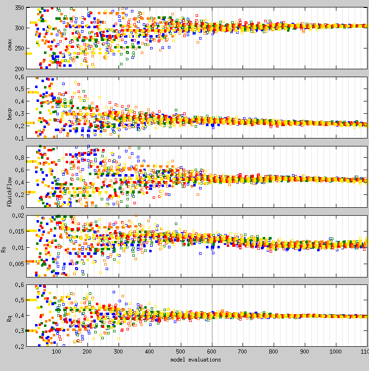

sodaPlotSeq(conf,sequences,metropolisRejects)
sodaPlotSeq(conf,sequences,metropolisRejects)
Plots the number of draws from the parameter space against the value of each parameter. Individual sequences are indicated by different colors. See also sodaMatrixOfScatter() with typeStr set to 'eval-par'.

Note that in the above figure, the light grey lines indicate the generations, the dark grey line near the middle represents the part of the record that is used to calculate the Gelman-Rubin convergence statistics (see configuration variable convUseLastFraction in this table).